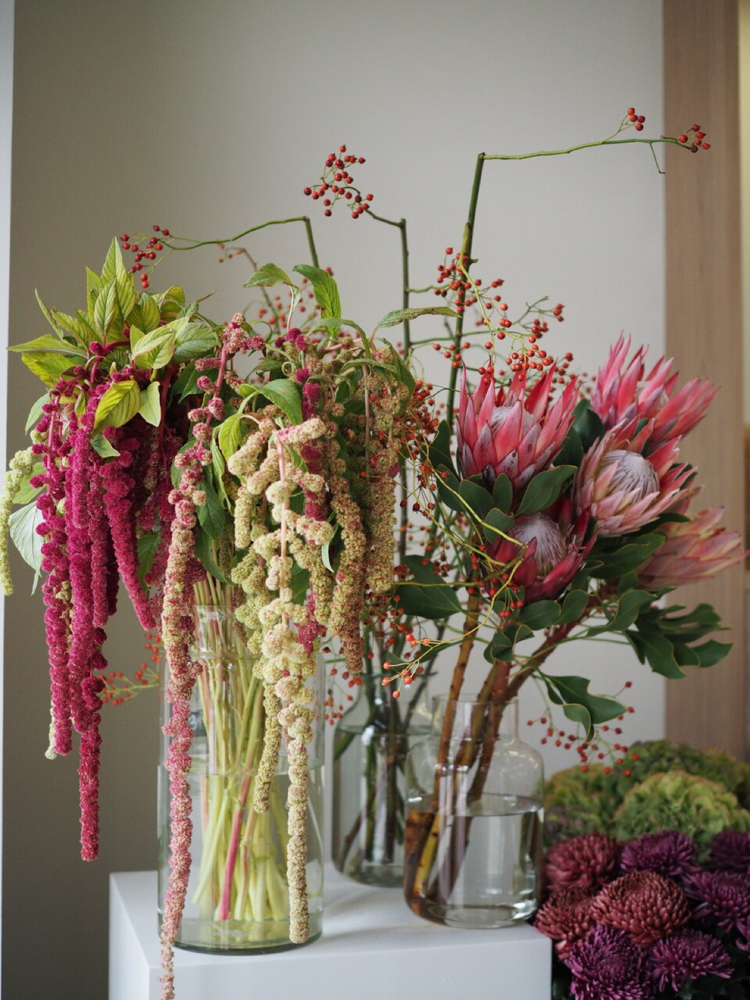
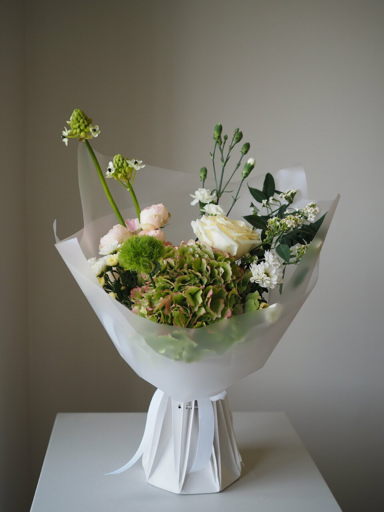
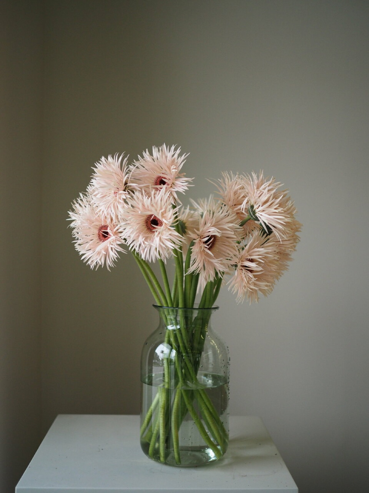
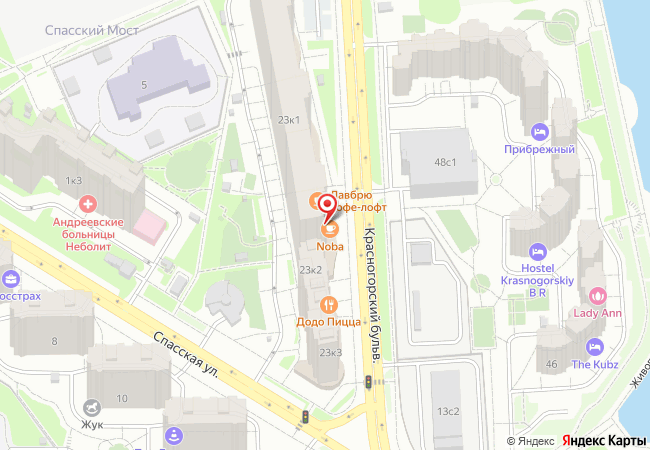

Протеи, амарант, анемоны, пионы и ранункулюсы стоят рядом с привычными розами. Из этого собирают букеты «не базовые» и на любой бюджет.



Указатель поводов
Готовые букеты стоят в витрине, авторский соберут под задачу. Стоимость зависит от состава, её назовут по телефону или в мессенджере.
- 01
Свадьба
Букет невесты и букеты на ЗАГС. С собой дают бумажную вазочку с водой, чтобы букет пережил день целиком.
свадебная флористика - 02
День рождения
Букет можно собрать под характер человека, без списка конкретных цветов. Можно попросить определённую гамму, например лиловую с белым.
по записи и без - 03
Доставка из другого города
Заказ в Telegram или WhatsApp, флорист согласует состав, букет доставят получателю.
доставка, предоплата - 04
Для дома
Небольшие букеты, комнатные растения, кашпо, сухоцветы, стабилизированный мох, цветы в колбе.
самовывоз - 05
К букету
Свечи ручной работы, авторские вазы, открытки, сладкие подарки, подарки из дерева. Шары надувают на месте.
подарочная упаковка - 06
Новый год
Новогодние композиции и подарки, подарочные сертификаты.
сезонно
365 оценок и 323 отзыва в открытой карточке магазина.
Как проходит визит в салон
- ХолодильникЦветы показывают прямо в холодильнике и объясняют, что с чем сочетается.
- Пока собираютПока флорист работает, могут угостить кофе.
- ОплатаКарта, наличные, СБП, перевод, онлайн. Действует бонусная программа.
- С собакойМожно со всеми животными. Есть пандус и парковка.
«Попросила собрать удаленно букет в тг, взяв за основу анемоны, а все остальное «будто собрали в поле»… нахожусь в Таиланде, получатель букета в Красногорске и все вместе заняло полчаса от силы»
«…он получился именно таким, как я его представляла, отлично перенес ЗАГС, фотосессию и ресторан… Букет радовал еще две недели после свадьбы»
«Цветы не напиханы, а расставлены со смыслом. Нет визуального шума. Всегда можно зацепиться взглядом за отдельный цветок»
«Отдельная благодарность флористу Елене, собирает просто нереальные букеты и «вот прям как хотел», а то и даже лучше»
«23 января купила домой небольшой букет. Сегодня 3 февраля, цветочки как новые, даже без добавления Кризала»
В отзывах по имени благодарят флористов Елену, Кристину, Маргариту и Александру.
Красногорский бульвар, 23, корп. 1, Красногорск
- Часы
- Ежедневно, 09:00–22:00
- Букет
- +7 (984) 777-03-03заказ букета
- Сеть
- +7 (925) 399-05-28общий телефон поддержки
- Написать
- WhatsApp · Telegram @TotSamyiBuket · канал @TSBflowers
- Как дойти
- Остановка «Красногорский бульвар», 170 мметро Мякинино 1,5 км, Волоколамская 1,8 км

Позвоните, и букет соберут к вашему приходу.
Заказать букет+7 984 777-03-03